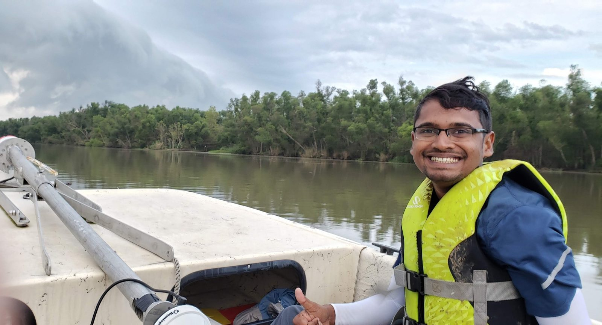

Step 1 · How a split works
Where does the water go when a river splits?
What happens at the water column at a channel bifurcation is essential for flow and sediment partitioning.
Water and sediment spilling sideways from a delta distributary channel are major phenomena influencing the connectivity and morphological development of a delta. In the Wax Lake Delta in Louisiana, I measured various flow attributes from a boat and investigated how water leaving a channel affects the three-dimensional flow structure at the channel-island interface and, in turn, where sediment ultimately ends up.
- Wax Lake Delta
- ADCP measurements
- Flow tracking
- Delta
- Flow structures

